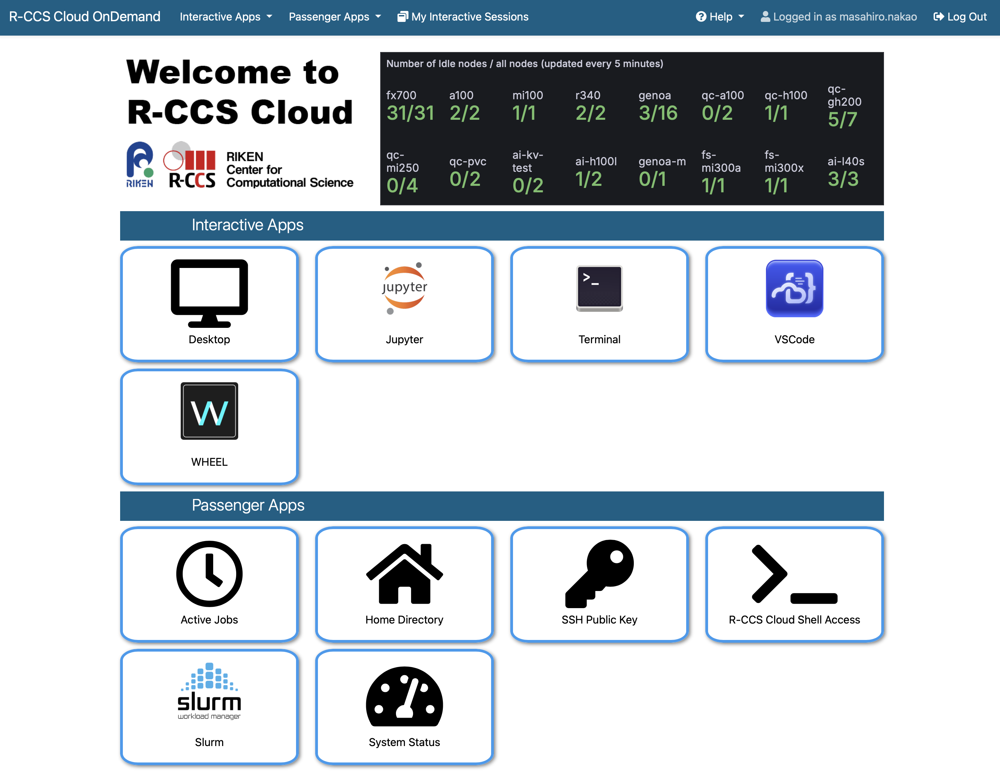
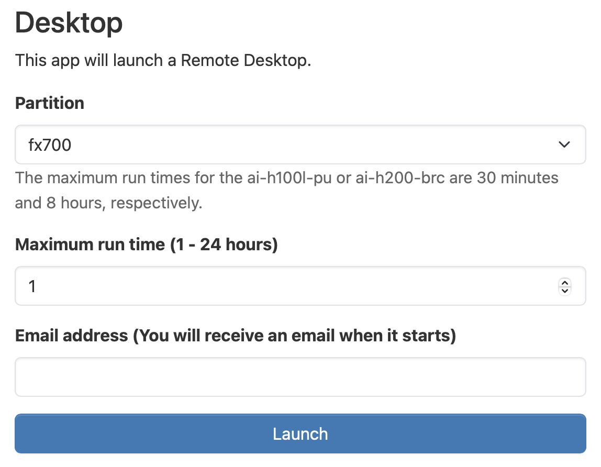
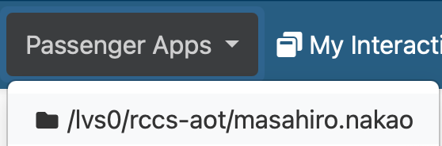
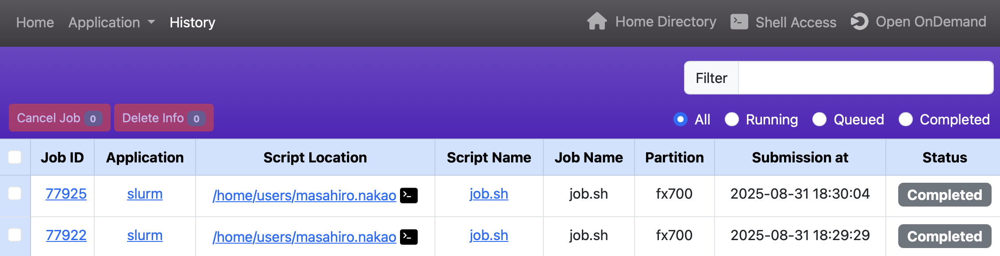

4. Open OnDemand
上図はR-CCSクラウドのOpen OnDemandのダッシュボードです。R-CCSクラウドのロゴの右側にある表は、各パーティションにおける利用可能なノード数を示しています。ロゴの上側にあるメニューバーの意味は下記の通りです（ブラウザの幅が狭くなると、アイコン表示に変わるものもあります）。
| 項目 | 意味 |
|---|---|
| Interactive Apps | 計算ノードで動作する対話アプリケーション |
| Passenger Apps | Open OnDemandサーバで動作するアプリケーション |
| My Interactive Sessions | 対話アプリケーションのセッション情報の一覧 |
| Help → Restart Web Server | Open OnDemandを再起動する |
| Help → Manual | 本マニュアルへのリンク |
| Log Out | ログアウトする |
4.1. 対話アプリケーション
対話アプリケーションとは、計算ノード上で実行するアプリケーションをユーザが対話的に操作できるアプリケーションです。下記の「開発アプリケーション」と「可視化アプリケーション」に分類して提供しています。
| 開発アプリケーション | 説明 |
|---|---|
| Desktop | X Window System上で動作する軽量デスクトップ環境Xfce |
| JupyterLab | Webブラウザ上で動作するプログラムの対話型実行環境 |
| VSCode | Microsoftが開発しているコードエディタ |
| WHEEL | 解析ジョブの作成/実行をインタラクティブに操作するWebツール |
| 可視化アプリケーション | 説明 |
|---|---|
| Gnuplot | コマンドライン駆動型グラフ作成プログラム |
| GrADS | 気象・気候分野の格子点データの可視化・解析プログラム |
| ImageJ | Javaの仮想マシン上で動作する画像処理ソフトウェア |
| OVITO | 粒子シミュレーションなどの大規模データの可視化・解析プログラム |
| ParaView | 科学技術データ可視化プログラム |
| PyMOL | 生体高分子の立体構造などび可視化・解析プログラム |
| Smokeview | FDSやCFASTの結果を表示するための可視化プログラム |
| VESTA | 結晶構造や電子・核密度等の三次元データなどの可視化プログラム |
| VisIt | 様々な科学データ形式に対応した可視化・解析プログラム |
| XCrySDen | 結晶構造や分子構造などの可視化プログラム |
例として、Desktopの利用方法を説明します。メニューバーの「Interactive Apps」から「Desktop」をクリックすると、計算リソースなどを入力するためのWebフォームが表示されます。入力後に「Launch」をクリックすると、R-CCSクラウドにジョブが投入されます。
ジョブ投入直後は、右上に「Queued」と記述された画面が表示されます。これは、ジョブは実行待ちであることを表しています。ジョブが計算ノードで起動すると「Running」という表示に変わり、「Launch Desktop」というボタンが表示されます。「Commpression（圧縮レベル）と「Image Quality（画質レベル）」に適当な値を設定して、「Launch Desktop」のボタンをクリックすると、DesktopがWebブラウザに表示されます。
「View Only (Share-able Link) 」ボタンをクリックすると、ミラーリングされたDesktopが新しいタブで開きます。ミラーリングされた画面は操作できません。このタブのURLをメール等で送信することで、画面共有を行うことができます（R-CCSクラウドにアカウントを持っているユーザ間でのみ画面共有が可能です）。


Desktopを終了させたい場合は、下記の手順のどれかを行ってください。Webブラウザを閉じるだけでは終了されないことに注意してください。
- 2つ前の画像の「Delete」ボタンをクリックする。
- メニューバーの「My Interactive Sessions」をクリックし、該当のジョブの「Delete」ボタンをクリックする。
- Desktopの左上の「Applications」から「Log Out」をクリックする。
4.2. Passengerアプリケーション
Passengerアプリケーションとは、Open OnDemandサーバで動作するアプリケーションです。下記のアプリケーションを提供しています。
| 名前 | 説明 |
|---|---|
| Active Jobs | ジョブのモニタリング |
| Home Directory | ファイル操作 |
| Login Node | ターミナル |
| SSH Public Key | SSH公開鍵の登録 |
| Slurm | バッチジョブの作成と投入 |
| System Status | クラスタの利用状況の確認 |
4.2.1. Active Jobs
ジョブの情報を閲覧や削除を行うことができます。「ID」の列の左側のボタンをクリックすると、ジョブ詳細情報を表示できます。「Actions」の列のボタンをクリックすると、ジョブの削除を行えます。

4.2.2. Home Directory
ファイルの送受信・編集などを行えます。送受信可能な最大サイズは10GBです。

Home Directoryの各機能は下記の通りです。個別のファイルやディレクトリに対する操作は「3点＋下三角」のメニューから行えます。
| ツールバー | 説明 |
|---|---|
| Open in Terminal | ターミナルの起動 |
| Refresh | ページを再描画 |
| New File | 新規ファイル作成 |
| New Directory | 新規ディレクトリ作成 |
| Upload | ファイルのアップロード |
| Download | ファイルのダウンロード |
| Copy/Move | ファイルのコピー、移動 |
| Delete | ディレクトリやファイルの削除 |
| パスバー | 説明 |
|---|---|
| ↑ | 1つ上のディレクトリに移動 |
| Change directry | ディレクトリの移動 |
| Copy path | 現在のパスをクリップボードにコピー |
| 表示オプション | 説明 |
|---|---|
| Show Owner/Mode | 所有者とパーミッションの表示 |
| Show Dotfiles | ドットファイル（隠しファイル）の表示 |
| Filter | ファイル名による絞り込み |
メニューバーの「Passenger Apps」にあるパスをクリックすると、そのパスを起点としたHome Directoryが起動します。

Rcloneを用いたクラウドストレージに対するファイルの操作も可能です。Rcloneの設定を行うには、対話アプリケーションのDesktopを起動し、そのターミナルからrcloneもしくはrclone-browserを実行します。設定後にOpen OnDemandのメニューバーの「Help」→ 「Restart Web Server」をクリックし、Home Directoryを起動すると、設定されたクラウドストレージにアクセスできます。なお、R-CCSクラウドヘルプデスクではRcloneの設定のサポートは行っておりませんのでご了承ください。
4.2.3. Login Node
WebブラウザからログインノードにSSHアクセスし、コマンドラインインタフェースを用いた操作を行うことができます。

4.2.4. SSH Public Key
1.2. ターミナルソフトウェアの利用を参照ください。
4.2.5. Slurm
バッチジョブの作成と投入を行えます。バッチジョブとは、ジョブスケジューラによって非対話的に実行される計算タスクのことです。バッチジョブはシェルスクリプトで記述され、必要な計算資源（たとえばノード数や最大実行時間など）は、ジョブスケジューラのディレクティブ（例：#SBATCH -N 4）を用いて指定します。R-CCSクラウドOpen OnDemandでは、Open OnDemand上で動作するアプリケーションであるOpen Composerを利用しており、簡易にバッチジョブの投入と管理を行うことができます。
右上の「Script Location」はジョブスクリプトの保存場所、「Script Name」はジョブスクリプトのファイル名、「Job Name」はジョブの名前（省略可能）を指定します。左下はジョブに関する入力項目であり、入力すると右下のジョブスクリプトが自動更新されます。入力後に「Submit」をクリックすると、R-CCSクラウドにジョブが投入されます。

ジョブが正常に投入されると上の方に表示される「History page」へのリンクをクリックします。

History pageでは、これまでに投入したジョブの履歴を閲覧することができます。表の各行は1つのジョブの情報を示しています。左上にある「Cancel Job」と「Delete Info」のボタンは、それぞれ「実行中のジョブのキャンセル」と「表からジョブの情報を削除する」ことを行います。それらの動作を行うためには、表の左端の列にある対応するチェックボックスをオンにします。
右上にあるテキストエリアとラジオボタンは、表に表示されるジョブをフィルタリングするために使用します。「Filter」に文字列を入力すると、その文字列に関係するジョブだけが表示されます。「All」、「Running」、「Queued」、「Completed」、「Failed」のラジオボタンはジョブの状態を表しており、その状態のジョブだけが表示されます。
「Job ID」列のリンクをクリックすると、ジョブスケジューラから取得されたプロファイリング情報が表示されます。

「Application」列のリンクをクリックすると、そのアプリケーションページが開きます。
「Script Location」列のリンクをクリックすると、Open OnDemandのHome Directoryが起動します。また、その横のターミナルアイコンをクリックすると、Open OnDemandのLogin Nodeが起動します。
「Script Name」列のリンクをクリックすると、送信されたシェルスクリプトの内容を表示するウィンドウが開きます。そのウィンドウの「Load Parameters」ボタンをクリックすると、パラメータが読み込まれたアプリケーションのページが開きます。

4.2.6. System Status
各パーティションの利用状況を閲覧できます。